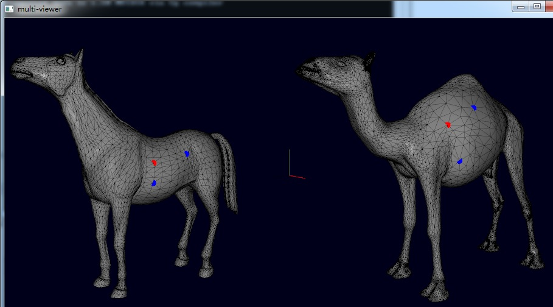
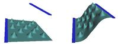
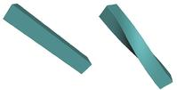
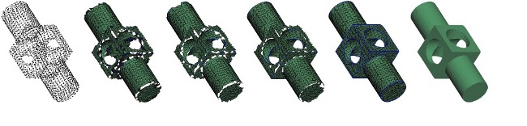
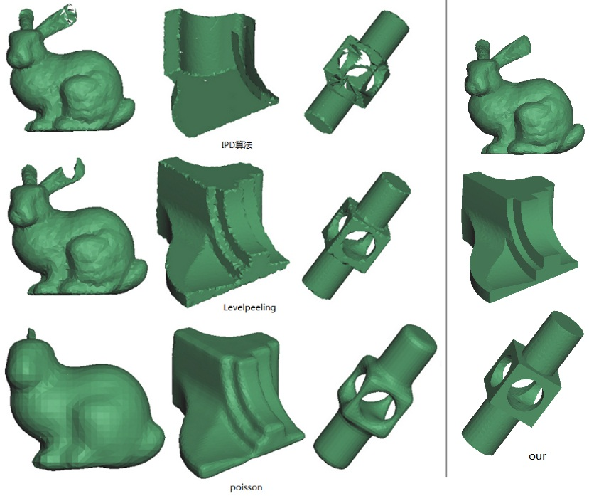
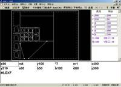
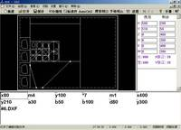
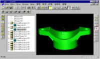

Implemantation of “Color Map Optimization for 3D Reconstruction with Consumer Depth Cameras” (2017.4.2)
download the program
ColorMap_Optimization_zip

Implementation of "An Intrinsic Coordinate System for 3D Face Registration" (2017.3)
download the program
3dFaceCCS.exe

detailes
Implementation of an old single image based facial modeling (2017.2)
download the program fitting_3dface.zip

Refer to: A morphable model for the synthesis of 3D faces. SIGGRAPH 99.
Design a vector field
implementation according to two papers:
"Design of 2D Time-Varying Vector Fields" and "Vector Field Design on Surfaces",you can download program at here . The source code is public available.

youtube视频
3d Registration Program
download here

2008-2009 Mesh deformation based 3D facial modeling from images
We present a new technique for automatically creating highly detailed 3D facial models from images of a human face. The key idea of the image-based facial modeling process is to deform a template mesh model using color consistency metric defined by all input images. We formulate the image-based facial deformation as a continuous optimization problem. Our objective function ensures the deformed surface model not only matches the image measurement across all the input images but also keeps the fine details of the template model. We also employ an efficient gradient-based optimization technique to find an optimal facial model that precisely matches an individual face in input images. We demonstrate the performance of our algorithm by testing on both synthetic and real image data..
I also implemented the algorithm of paper "A morphable model for the synthesis of 3D faces" so that I could compare it with mine. My algorithm can get better result than its.
2008 Mesh deformation
I implemented a few papers when I was studying mesh deformation. I read papers about 2 months,then I spend a week to implement the first lapalcian based deforrmation ( paper 1)). In my spare tiem I implement 2) with a few hours and 3) about one day.But there results seems not good enough with the implemtentation of 3) due to the well generated deformation graph. Thanks Olga Sorkine for providing me those test models. My implementation of 3) is not real time which may be resulted from too many nodes in deformation graph.Any suggestions?
1). Lapalcian mesh deformation
2). Olga Sorkine and Marc Alexa. As-rigid-as-possible surface modeling. SGP 2007
 The left is deformed with 1) ,right with 2).Download the program here
3). Embedded Deformation for Shape Manipulation . Robert W. Sumner, Johannes Schmid, Mark Pauly SIGGRAPH 2007.
Download the program here
2005-2008 Segment Driven Feature Sensitive Surface Reconstructiond
In order to robust treat point sets with sharp features or non-sufficient sampled, this paper present a segment driven feature sensitive triangulation algorithm, as an extension to general advancing front technique, to reconstruct high quality triangle meshes from unorganized, un-oriented point sets. With a smoothness threshold, the triangulation process is divided into two stages as segment reconstruction and stitching reconstruction. The segment reconstruction triangulates smooth regions starting from smooth seed triangulations,performs element classifying and feature detection to filers out boundary outliers and relocate feature vertices in order to further advance fronts of these smooth segments. The stitching reconstruction stitches the gaps among segments or smooth regions of segments while advancing fronts of all segments, relocates or inserts new feature vertices by intersections of local smooth surfaces. With this two stage triangulation technique, the algorithm can robust treat point sets with sharp features or bad sampling condition such as non sufficient sampling, and especially avoids the expensive math computing such as covariance analysis and intersection tests used in general advancing front technique. Experiment results show that our technique works well for non-sufficient sampling condition and generates feature sensitive quality triangulations.

meshing process

Comparison with IPD,Level Peeling and Poisson
2007 Mesh Segmentation based on Convex-Concave Signal
Mesh segmentation is important for many geometry processing applications including mesh parameterization and texture atlas generation. This paper presents a new and efficient algorithm for mesh segmentation based on the convex-concave analysis for vertices or faces. The convex-concave analysis based on the uniform supporting radius divides the vertex into four categories flat vertex, convex vertex, concave vertex and feature vertex. The algorithm firstly performs the planar region growing from the flat vertex, then follows the convex-concave region growing from the unclassified convex or concave vertices, finally, does the competitive region growing according to the smoothness of border vertices and border edges. For the mesh models which are not segmented fully, the algorithm takes the similar steps based on the face convex-concave analysis to complete final segmentation. This algorithm rapidly segments mesh models while preserving geometric features, and can be applied especially in CAD.
figure 1: The segmentating process of the Fandisk model：(a) 6475 vertices，12946 trangulates,(b) Vertex Type：Flat(gray),Feature(yellow),Convex(red),Concave(blue),(c) planar region growing (d) convex-concave region growing (e) competitive region growing
2001-2006 Glass Cutting system
 

1999-2000: Identifier based Feature Modeling(Phd project)
To solve two key problem as topological element identifing and constrain solver for feature modelingWe compared the idenfier system with SolidWorks 1998。

Hongwei Dong.Mesh deformation based 3D facial modeling from images[J].Journal of Computer Aided Design & Computer Graphics (in chinese), to be published 2012.
Hongwei Dong . Segment Driven Feature Sensitive Surface Reconstruction. Journal of Computer Aided Design & Computer Graphics (in chinese), 2010,22(09): 1529-1538
Hongwei Dong,Zhong Li, Rurong Zhou,Xiaojun Wu. Mesh Segmentation based on Convex-Concave Signal. Journal of Computer Aided Design & Computer Graphics (in chinese), 2009,21(03): 295-304
Hongwei Dong, Rurong Zhou, Wenbo Xu. Implement of Topological Element Identifying System. Journal of Computer Aided Design & Computer Graphics,2002,14(04): 380-384
Hongwei Dong.A Survey of Mesh Deformation[J].Journal of Image and Graphics (in chinese),2011,36(12): 2095-2104.
Hongwei dong.A Review of Mesh Segmentation[J].Journal of Image and Graphics (in chinese),2010,,15(2): 181-193
more： ScholarSpace：Academic Search In China search with "董洪伟" 或 www.cnki.net